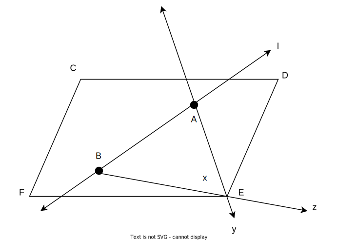
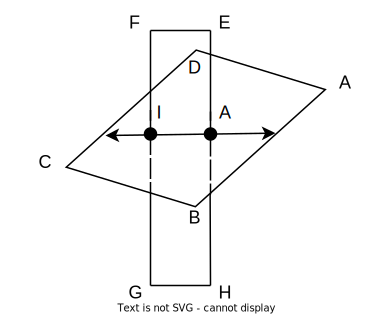
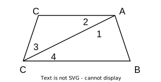
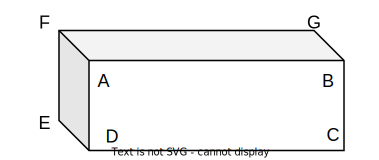

Chapter 1: Tools of Geometry¶
1.1: Points, Lines, and Planes¶
Vocabulary
Visual Planes, Points, Lines, and Rays
Line segment \(\overline{AB}\) lies on line \(l\) which can be referred to as line \(\overleftrightarrow{AB}\). line \(l\) and line \(y\) meet at point \(E\). Ray \(z\) (or \(\overrightarrow{BE}\)) originates at point \(B\). Everything is on plane \(x\) (or plane \(FCD\)).
Intersecting Planes
Two lines meet at a point while two planes meet at a line.
Plane \(FEH\) meets plane \(ABC\) at \(\overleftrightarrow{IJ}\).
Note
Remember that planes, like lines, extend forever. Therefore planes meet at lines, not at line segments as it might appear from the visual. In this example, plane \(FEH\) meets plane \(ABC\) at \(\overleftrightarrow{IJ}\), not at \(\overline{IJ}\).
1.2: Line Segments and Distance¶
Vocabulary
Additive property of length
According to the additive property of length, \(\overline{AB} + \overline{BC} = \overline{AC}\)
Distance Formula
This is used to find the distance between two points on a coordinate plane. This formula is not actually a formula as it states to simply use the Pythagorean theorem to solve (\(rise^2 + run^2 = distance^2\)).
Finding a Line Segment Length with Algebra
Example Question: Find the value of x and RS if S is between R and T if \(RS = 5x, ST = 3x, RT = 48\)
We first find x:
We can then find \(\overline{RS}\) with \(x \cdot 5 = 30\).
Congruent Line Segments
In the image, \(\overline{AB}\) is congruent with \(\overline{BC}\) as they are both the same length. In fancy terms thats \(\overline{AB} \cong \overline{BC}\).
1.3: Locating Points and Midpoints¶
Vocabulary
Finding the Midpoint
Formula for finding the midpoint on a line segment:
Tip
A bit like finding an average for a dataset
Formula for finding the midpoint on a line on a coordinate plane:
For example for the points (0, 0) and (12, 8):
(6, 4) is the coordinate for the midpoint.
Distance Formula
This is used to find the distance between two points on a coordinate plane. This formula is not actually a formula as it states to simply use the Pythagorean theorem to solve (\(rise^2 + run^2 = distance^2\)). This can also be expressed as \((x_{1} - x_{2}\))
1.4: Angle Measure¶
Vocabulary
Note
You can refer to an angle by a point on both sides and the vertex
Finding the vertex
If we want to find the vertex for \(\angle 1\), we first check what sides make up \(\angle 1\). In this figure, \(\overrightarrow{AC}\) and \(\overrightarrow{AB}\) make up the angle. The common meeting point or vertex is at point \(A\).
Solving x from Angle Bisector
If \(m \angle ABE = 60\) and \(m \angle ABD = 4x + 14\), what is x?
Knowing that \(\angle ABD\) bisects \(\angle ABE\):
1.5: Angle Relationships¶
Vocabulary
Examples
\(\angle ADB\) and \(\angle BDE\) are complementary angles. \(\angle ADC\) and \(\angle ADE\) are supplementary angles. \(\angle EDG\) and \(\angle ADC\) are congruent angles. \(\angle EDF\) and \(\angle BDC\) are vertical angles. \(\angle FDG\) and \(\angle EDG\) are adjacent angles.
Calculating Tips
For a need to find a missing angle from a pair of the angles mentioned above. For the examples below x is the given angle and y is the angle the you need to find.
1.6: Two-Dimensional Figures¶
Vocabulary
Perimeter and Area
Circumference and Area of a Circle
1.7: Transformations in the Plane¶
Lesson Skipped
1.8: Three-Dimensional Figures¶
Vocabulary
Examples
In the figure, we can see that planes make up the three-dimensional figure. We can use the same rules as we did in 1.1: Points, Lines, and Planes. For example plane (face) \(ABC\) meets plane (face) \(FAB\) at \(\overleftrightarrow{AB}\) (edge). Edges \(\overline{AB}\) and \(\overline{AD}\) meet at vertex \(A\). \(\overleftrightarrow{AB}\) amd \(\overleftrightarrow{DC}\) are parallel. \(\overleftrightarrow{ED}\) amd \(\overleftrightarrow{AC}\) are skew lines.
Find the Volume in A Prism
To find the volume in a prism multiply the area of the base with the height.
Example: A circle volume is \(\pi r^2 h\)
Find the Volume in A Pyrarid
The regular forumla \(\frac{1}{3} \cdot base \cdot height\)
Find Surface Area of a Cone
The forumla is \(\pi r (r + hypotenuse)\)
Find Surface Area of a Cylinder
The formula is \(2 \pi rh\)
Tip
Its just circumfrence times height.
1.9: Two-Dimensional Representations of Three-Dimensional Figures¶
Lesson Skipped
1.10: Precision and Accuracy¶
Lesson Skipped